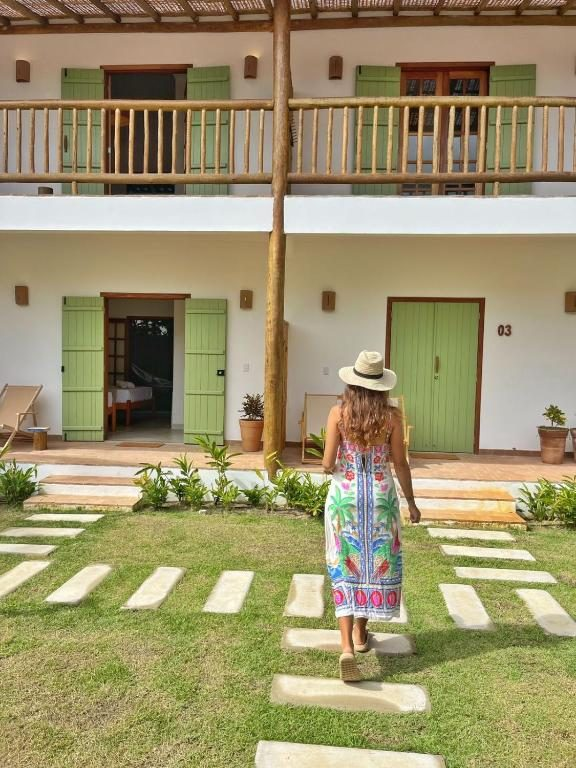
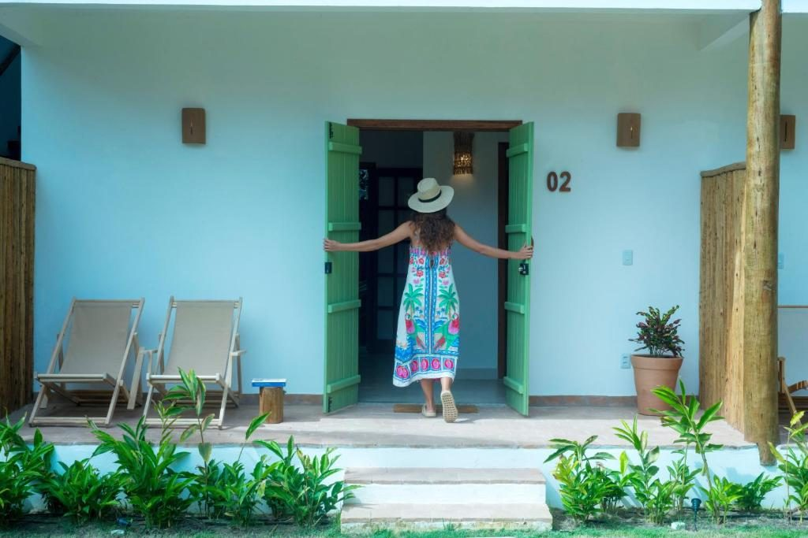
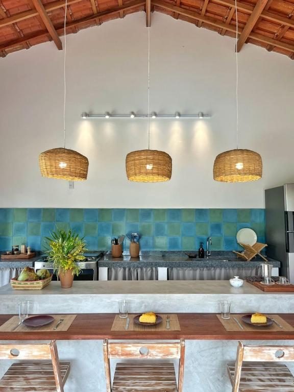
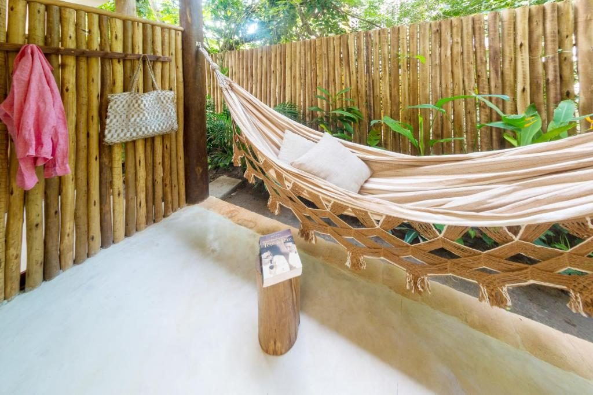
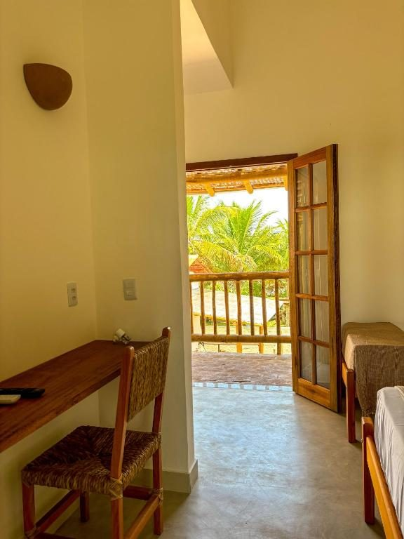

Onde o tempo desacelera. Poucas suítes, uma piscina cercada de verde e o sossego de um jardim tropical — o refúgio simples e sofisticado que você procurava.
Poucos quartos, muito cuidado e um jardim tropical que envolve tudo em verde e sombra. A Pousada Jardim Cumuru é um convite a fazer menos e sentir mais — no sul da Bahia que ainda é segredo.
Instalações novas e impecáveis, a poucos passos das melhores praias de Cumuruxatiba. Aqui, o luxo é ter tempo.
"Chegar e respirar fundo. O jardim, o canto dos pássaros, o cheiro do mar."
Fale conosco
Cada detalhe foi pensado para o descanso: a sombra fresca das palmeiras, o reflexo do céu na piscina ao entardecer, o silêncio que só um lugar preservado oferece.
Uma cozinha compartilhada completa, toda equipada, fica à sua disposição para preparar o que quiser, na sua hora. E, quando bater a vontade de mar, ele está logo ali.
Aceitamos pets e temos quartos para famílias — venha do seu jeito, com quem você quiser.
Ver as suítes
Palmeiras, flores e sombra fresca. Um passeio que parece durar a manhã inteira.
Águas calmas cercadas de verde, deck de madeira e o som dos pássaros.

Completa e compartilhada: prepare um café, um jantar ou aquele drink, no seu tempo.

Uma rede à sombra, o vento fresco e um livro. O tipo de tarde que não se esquece.
Camas macias, varanda para o jardim e o silêncio de um lugar que o mundo ainda não descobriu.

Poucas suítes, cada uma com varanda para respirar o jardim. Conforto sem excessos: o que você precisa para dormir bem, acordar tranquilo e não querer ir embora.
Aceita pets · Quartos para famílias
Consultar disponibilidadeNo litoral sul da Bahia, entre o Prado e Corumbau, Cumuruxatiba é uma vila de praias calmas, falésias coloridas e mar sereno. Sem multidões, sem pressa. A Praia de Cumuruxatiba fica a cerca de 450 m (6 min a pé) da pousada; um pouco além, praias desertas, piscinas naturais na maré baixa e, na temporada, as baleias jubarte que passam pela costa. À noite, rodas de samba e forró embalam a vila.
"Instalações novas e impecáveis, a piscina é linda e as camas super confortáveis." Hóspede · Booking
"Localização perfeita, pertinho da praia e do centro da vila. Voltaremos com certeza." Hóspede · Booking
"Equipe acolhedora, tudo muito limpo e um sossego que faz todo bem." Hóspede · Booking
Sem formulários, sem burocracia. Fale direto com a gente pelo WhatsApp e cuidamos de tudo para a sua chegada.
Consultar disponibilidade📍 Cumuruxatiba, Prado — Bahia, Brasil
a cerca de 450 m (6 min a pé) da praia
💬 WhatsApp: +55 (73) 99942-1815
📷 Instagram: @jardimcumuru
🕑 Check-in a partir das 14h · Check-out até 11h